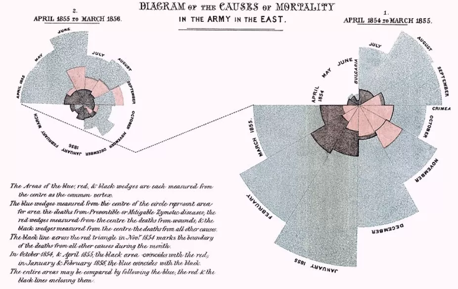
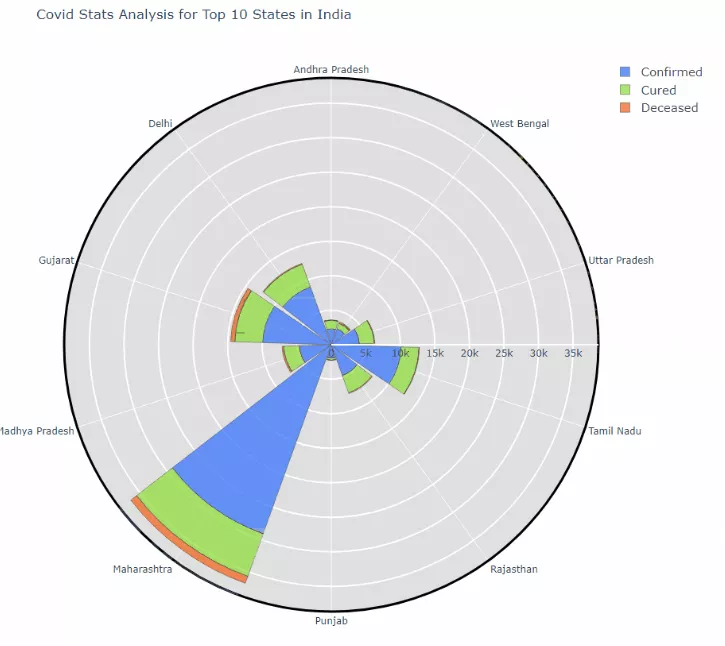

La pieza nace a mediados del siglo XIX, durante la guerra de Crimea.
En el año 1854 Florence Nightingale es enviada al hospital militar en Scutari junto a un grupo de enfermeras para atender a los soldados británicos heridos y enfermos.
Las condiciones sanitarias fueron lo que llamó la atención de esta enfermera; hacinamiento, falta de higiene, escasez de suministros, mala ventilación y problemas en el manejo de los residuos y del agua. Estas condiciones favorecieron la propagación de enfermedades como tifus, fiebre tifoidea, cólera y disentería entre los soldados del mismo hospital, por lo cual, gran parte de las muertes fueron causadas por estas mismas.

El diagrama de la rosa permitió visualizar y comparar las principales causas de las muertes de los soldados.
Esto demostro que en donde se hacía evidente con datos estadísticos, que la mayor parte de las muertes no eran provocadas por heridas de batalla sino por enfermedades prevenibles relacionada con la deficientes medidas de higiene dentro de los hospitales militares.
Gracias al gráfico de la rosa logró identificar dónde ocurría el problema, qué estaba provocando las muertes y quienes estaban muriendo. Dejó en evidencia la falta de cuidados en la higiene en hospitales militares lo que abrió las puertas a una mejora en infraestructura sanitaria y limpieza.
El diagrama de la rosa se usa hasta hoy en día.
A este se le da uso en representar datos estadísticos cíclicos o temporales (como meses o estaciones) y comparar múltiples variables de forma visual e intuitiva, logrando un gran impacto en la comunicación de datos complejos.
Por ejemplo, en este estudio se aprovecharon las ventajas de los gráficos de rosa de Nightingale para crear una visualización en Python, recopilando datos de análisis de las estadísticas de COVID-19 para los diez estados principales de la India.
